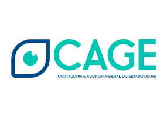

Estado do Rio Grande do Sul
Análise de Precificação de Obras
Contadoria e Auditoria-Geral do Estado · Secretaria da Fazenda
Rascunho salvo · --:--
Limpar preenchimento
Confirmar limpeza dos dados
Esta ação removerá
todos os campos preenchidos
da ferramenta e o rascunho salvo localmente. Não é possível desfazer.
Deseja continuar?